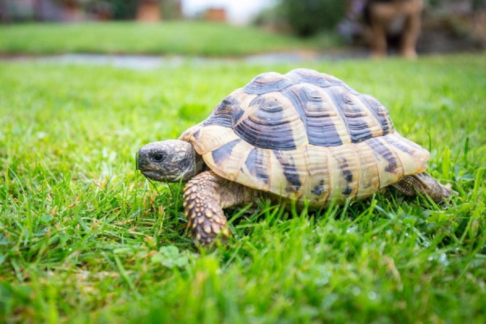
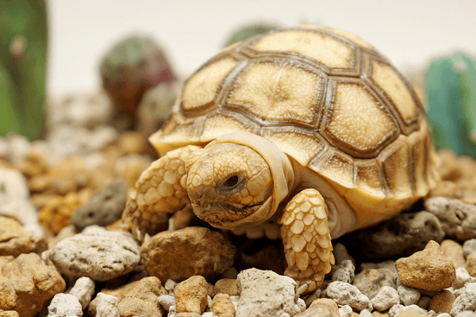

The three-box box turtle (scientific name: Cuora trifasciata) is a medium-sized box turtle.
tortoiseshell slightly flat, on the edge has 3 ledges (1 edge, 2 edges). Turtles cover 2 pieces of movement can be sealed into the shell tomorrow. The back is brown, with 3 dark gray stripes running along the upper 3 edges. Turtles are dark gray with brown and red borders. The length of the apricot is about 17 to 20 cm, almost double the width. Three-bar box turtles eat fruits, leaves, algae, water hyacinth growing along stream streams and gully, including insects. Three-bar box turtles have long fasting, up to 2 months. Turtles usually lay 2 eggs in the summer, the eggs are oval, size 27 to 50mm. Three-box box turtles live along streams, mountain and midland areas, to an altitude of 1000m. During the day, turtles hide under piles of decaying leaves along streams or ditches, at night to search for prey.
Three-box box turtles are distributed in northern Myanmar, southern China (including Hainan Island), Vietnam (Cao Bang, Lang Son, Vinh Phu (Tam Dao), Ha Tinh)..
On the Tortoise Turtle - A rare species of tortoise standing on the brink of extinction Amphibian turtles are one of the rare and endangered turtles in Vietnam and currently some of these turtles are being preserved in Cuc Phuong National Park. Currently, this animal has been listed in the Vietnam Red Data Book as being in danger of conservation.
Amomum turtles are known to be one of the medium sized turtles among other shallow and freshwater turtles in Vietnam. This species, along with the border mountain turtles and brown mountain turtles, is very rare and endangered. Here are some information related to this species that you can refer to. Amomum turtles have scientific names as Cuora Mouhoti (Gray, 1862), Pyxidea Mouhoti (Gray, 1862), Cyclemys Mouhoti (Gray, 1862). They belong to the Emydidae family of turtles, the Testudinata tortoise family.
The shell of the Amomum tortoise is about 18cm long, whose color varies from light brown to dark brown. On tomorrow there are 3 ledges clearly. In which 2 edges are symmetrically 2 sides through the ridge of the spine to form a protruding plane. The fringe plates at the end of the shell have a jagged shape. The bib can help to close the upper part of the bib to the apricot. The males often have concave bibs on the underside, the female tortoise usually has a flat bib. The turtle's bib is pale yellow or brown in color and has a black border around it.This turtle has red eyes.The head of this species is quite large compared to some other turtles, ranging in color from yellow to dark brown. Some of the other individual mountain turtles have a slightly gray color, the skin at the top of the head is hard.Tail: For male turtles, their tails are usually larger and longer than the females. Foot: The size of this tortoise when mature is usually from 145 - 180mm. Long size n Legs: Amomum turtles have quite long legs, helping the body to be raised above the ground and help them to move more quickly. The skin of their feet is thick and scaly. The strong toenails allow them to move and dig better in the mountains. The amount that the Amomum Turtle can achieve is about 205mm. Weight: For individual marijuana turtle individuals weigh from 500 - 1kg. The largest weight can be up to 1.3kg.
For adult Amomum turtles there is usually not much variation in weight. The increase or decrease of weight may depend on the weather and food sources. At the end of the fall the weight of this species can reach its highest, then they will gradually become less active and until the winter they will make burrows and lie dormant in the cave and hibernate, after the period of hibernation the body weight decreases.These turtles often live in dense forests and often hide under layers of dead leaves, rotten wood and hay. Amphibian tortoises usually feed in the spring and summer when the ambient temperature becomes warm. These are also the two main breeding seasons for this speciesAmomum turtles are one of the herbivores, their main food is small plants or fallen fruits. In many cases they can still eat some species such as snails, worms and some other small fish.
This species of turtles is mainly distributed in eastern India, China and Laos. In Vietnam, Amomum turtles are often distributed in some mountainous areas such as Lao Cai, Thai Nguyen, Tam Dao, Ba Vi, Hoa Binh, Ninh Binh, Thanh Hoa and Nghe An..
8 Ton That Thuyet, My Dinh, Tu Liem,
Ha Noi, Viet Nam.
0966469746 (Do Van Huan)
0666729716 (Nguyen Minh Nghia)
0522697743 (Duong Thanh Binh)
0849818969 (Le Van Phuong)
0373485924 (Nguyen Thanh Lam)
KawasakiZoo@gmail.com